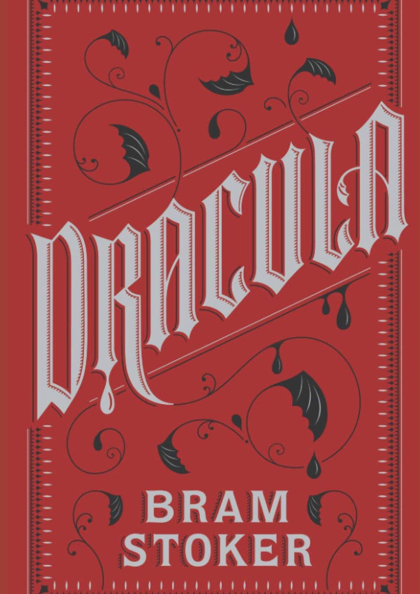

 When Jonathan Harker visits Transylvania to help Count Dracula with the purchase of a London house, he makes a series of horrific discoveries about his client. Soon afterwards, various bizarre incidents unfold in England: an apparently unmanned ship is wrecked off the coast of Whitby; a young woman discovers strange puncture marks on her neck; and the inmate of a lunatic asylum raves about the 'Master' and his imminent arrival.